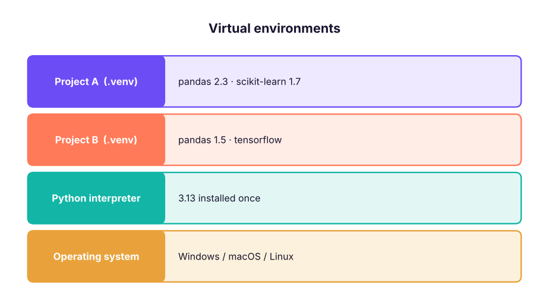
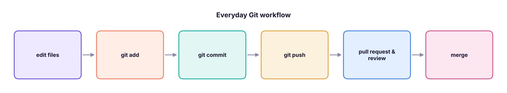

Modules, Packages, Virtual Environments and Git
Organise code into modules and packages, install libraries with pip or uv inside virtual environments, pin dependencies, use the standard library, and version-control your projects with Git and GitHub.
- Import modules in the different ways and explain if name == "main"
- Create a package with init.py and a sensible project layout
- Create virtual environments and install and pin packages with pip or uv
- Use key standard-library modules (os, pathlib, datetime, random, math, statistics, collections)
- Use the everyday Git workflow: init, add, commit, branch, push, pull request
Modules
A module is any .py file. Importing it gives you its functions, classes and variables.
import math # whole module, use with prefix
from statistics import mean, median # specific names
import datetime as dt # alias
from collections import Counter as C
print(math.sqrt(144), math.pi, mean([3, 5, 10]), median([3, 5, 10]), dt.date(2025, 4, 1).strftime("%d %b %Y"), C("aab"))
print(math.ceil(4.2), math.floor(4.8), math.log10(1000), round(math.exp(1), 4), math.comb(5, 2))12.0 3.141592653589793 6 5 01 Apr 2025 Counter({'a': 2, 'b': 1})
5 4 3.0 2.7183 10| Style | When |
|---|---|
import pandas as pd |
Standard aliases (np, pd, plt, sns) |
from pathlib import Path |
A few names used often |
from module import * |
Avoid: hides where names come from |
Writing your own module
from pathlib import Path
Path("metrics.py").write_text('''"""Reusable business metrics."""
GST = 0.18
def margin_pct(profit, sales):
return round(100 * profit / sales, 1) if sales else None
def with_gst(amount):
return round(amount * (1 + GST), 2)
if __name__ == "__main__": # runs only when executed directly, not when imported
print("self-test:", margin_pct(25, 200))
''', encoding="utf-8")
import importlib, sys
if "" not in sys.path: sys.path.insert(0, "") # notebooks and scripts already search the current folder
import metrics
importlib.reload(metrics)
print(metrics.margin_pct(30, 120), metrics.with_gst(1000), metrics.__doc__)
import subprocess, sys
print(subprocess.run([sys.executable, "metrics.py"], capture_output=True, text=True).stdout.strip())
Path("metrics.py").unlink()25.0 1180.0 Reusable business metrics. self-test: 12.5
__name__ is "__main__" when the file is run as a script and the module name when imported. The guard lets one file be both a library and a script.
Where does Python look?
The current folder, then the folders in sys.path (including site-packages, where pip installs libraries). ModuleNotFoundError usually means: wrong environment, package not installed, or a typo. Never name your own file pandas.py or random.py: it will shadow the real library.
Packages and project layout
A package is a folder of modules (with an __init__.py). A clean data project:
churn-project/
├── pyproject.toml # project metadata and dependencies
├── README.md
├── .gitignore # venv, data, secrets, __pycache__
├── data/ # raw/ and processed/ (usually not committed)
├── notebooks/ # exploration
├── src/churn/
│ ├── __init__.py
│ ├── load.py # read and validate data
│ ├── features.py # feature engineering
│ └── train.py # model training
└── tests/
└── test_features.pyImport with from churn.features import add_tenure_band. Notebooks for exploring; .py modules for anything reused or scheduled.
The standard library tour
import os, random, statistics, datetime as dt, itertools, textwrap, uuid, time
random.seed(42)
print(random.randint(1, 6), random.choice(["N", "S", "E"]), random.sample(range(100), 3), round(random.random(), 3))
print(statistics.stdev([2, 4, 4, 4, 5, 5, 7, 9]), statistics.mode([1, 2, 2, 3]))
today = dt.date(2025, 10, 27); due = today + dt.timedelta(days=45)
print(due, due.strftime("%A"), (dt.date(2026, 1, 1) - today).days, "days to new year")
print(os.cpu_count() > 0, os.getenv("HOME") is not None, textwrap.shorten("A very long product description here", 20), len(str(uuid.uuid4())))6 N [3, 94, 35] 0.245 2.138089935299395 2 2025-12-11 Thursday 66 days to new year True True A very long [...] 36
| Module | Use |
|---|---|
pathlib, os, shutil, glob |
Files and folders |
datetime, zoneinfo, time |
Dates, time zones, timing |
math, statistics, random, decimal |
Numbers (decimal for money) |
collections, itertools, functools |
Data structures and iteration helpers |
csv, json, sqlite3, pickle |
Data formats and storage |
re |
Regular expressions |
logging, argparse, subprocess |
Scripts and tools |
urllib, http |
Web (most people use requests/httpx) |
concurrent.futures, asyncio |
Parallel and asynchronous work |
pip, virtual environments and uv
Each project should have its own virtual environment so its library versions do not clash with other projects.
# Create and activate an environment (built-in venv)
python -m venv .venv
source .venv/bin/activate # macOS/Linux
.venv\Scripts\activate # Windows
# Install, list, pin, reproduce
pip install pandas scikit-learn matplotlib
pip list
pip freeze > requirements.txt
pip install -r requirements.txt
# uv: a much faster modern alternative (by Astral)
uv init churn-project && cd churn-project
uv add pandas scikit-learn
uv run python src/churn/train.py
Anaconda/Miniconda bundle Python with data libraries and the conda environment manager; popular in data science courses. Google Colab and Kaggle Notebooks run Python in the browser with libraries pre-installed: ideal for practice. Pick one tool per project and stick to it.
Git and GitHub essentials
Git tracks changes to files; GitHub hosts repositories online for backup, collaboration and your portfolio.

git init # start tracking a folder
git status # what changed?
git add analysis.py # stage a file (git add . = everything)
git commit -m "Add churn EDA" # save a snapshot with a message
git log --oneline # history
git switch -c feature/rfm # new branch
git push -u origin feature/rfm # upload the branch to GitHub
git pull # download others' changes
git clone https://github.com/user/repo.git
git diff # unstaged changes
git restore file.py # discard local changes to a fileA .gitignore keeps junk and secrets out:
.venv/
__pycache__/
.ipynb_checkpoints/
data/raw/
*.env
.DS_StoreAPI keys, passwords and tokens belong in environment variables or a .env file listed in .gitignore. Read them with os.getenv("OPENAI_API_KEY"). If a key is ever pushed, revoke it immediately: deleting the commit is not enough.
Summary
- A module is a
.pyfile; a package is a folder of modules. Use standard aliases and avoidimport *. if __name__ == "__main__":separates script code from importable code.- One virtual environment per project; pin versions in
requirements.txtorpyproject.toml(pip, uv or conda). - The standard library covers files, dates, maths, data formats, logging and more.
- Git: add → commit → push → pull request → merge; use
.gitignoreand never commit secrets.
1. What does if __name__ == "__main__": do?
__name__ is the module name.2. Why use a virtual environment?
3. How do you record the exact installed versions for others?
pip install -r requirements.txt.4. Why should you not name your file pandas.py?
5. Which Git command uploads your commits to GitHub?
6. Where should API keys go?
(1) Create a project folder with a virtual environment and install pandas and matplotlib. (2) Write a module cleaning.py with two functions and import it from a notebook. (3) Create a GitHub repository, add a .gitignore and a README, and push. (4) Create a branch, change the README and open a pull request to yourself.
Show solution
Follow the commands in this lesson. Check with python -c "import pandas; print(pandas.__version__)" and git log --oneline. A good README states the question, the data source, how to run the code and the key findings with one chart.
Q: Difference between a module, a package and a library? A module is one file, a package is a folder of modules, and a library is a collection of packages distributed together (e.g. on PyPI).
Q: How do you make a Python project reproducible? Virtual environment, pinned dependencies, a README with run instructions, fixed random seeds, version control, and data lineage.
Q: git merge vs git rebase? Merge combines histories with a merge commit; rebase replays your commits on top of another branch for a linear history. Never rebase shared branches.
Practise more online
Free, trusted places to test yourself on this topic. Links open the original site in a new tab.